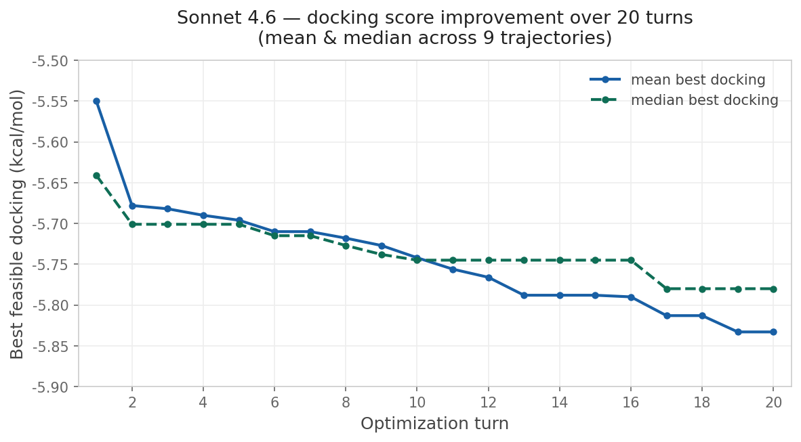
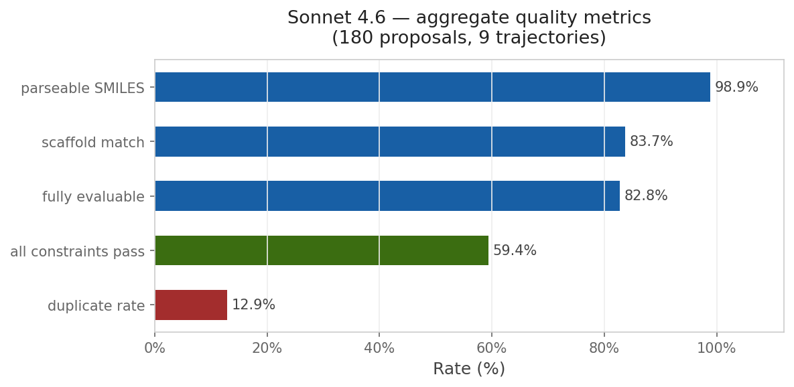

Yesterday, an interesting paper was released by Prescient Design (Genentech), “Evaluating the Progression of Large Language Model Capabilities for Small-Molecule Drug Design.” The authors formulate a variety of problems in small-molecule drug design as reinforcement-learning (RL) problems and use RL-based post-training to improve the performance of a 30B-parameter Qwen model (specifically, Qwen3-30B-A3B-Thinking-2507). They then compare the performance of this fine-tuned Qwen model (“Aspen”) to various frontier models on property prediction, molecular representation tasks, and property-constrained generation.
I was particularly interested in the authors’ demonstration that both Aspen and frontier models like GPT 5.2 & Claude Opus 4.6 could perform well in simulated lead-optimization scenarios. Here’s how the authors describe this evaluation in the paper (newlines added for visual clarity):
Next, we examine the capabilities of these models in a multi-turn setting, consisting of an iterative molecular optimization loop that simulates real-world lead optimization. Specifically, we consider optimizing a docking score—as a weak proxy for potency—under a set of property constraints, consisting of a combination of DMPK and RDKit properties that can all be computed.
For the experiments here, we consider a single target, a carbonic anhydrase IX (PDB ID: 8TTR), and a starting seed molecule obtained from (Elshamsy et al., 2025). Each trajectory starts from the same molecule and runs for 20 turns; at each turn the model proposes a modified SMILES and is provided with the resulting docking score and the corresponding property values of the constraints (see Appendix C.2). In the system prompt (see Appendix C.1), we instruct the model to always propose structurally novel molecules across all 20 turns.
Importantly, we blind the target name from the model, resulting in a black-box optimization setting that restricts the model from leveraging knowledge about the protein to carry out the optimization.
This sort of multiparameter optimization is a relatively non-trivial task; while it’s relatively easier to increase docking scores by simply making the molecules bigger or adding hydrogen-bond donors, it’s substantially harder to generate useful improvements that don’t simultaneously compromise solubility, permeability, and other relevant drug-like properties. As such, it’s standard to use specialized frameworks like REINVENT for tasks like this (and even these tools have well-known pathologies).
What the Genentech team did is much simpler. Essentially, they:
Surprisingly, this works! Over time, the LLM-proposed molecules get better (as assessed by docking score) while generally abiding by the requested constraints. Although the guess-and-check nature of this workflow implies that even random perturbations should eventually lead to improvements, several factors suggest that chemical intelligence is actually at play here: (1) the base Qwen model is barely able to improve over the baseline, suggesting that it’s unable to meaningfully reason about molecule structures, and (2) the later models from each family fare better than the earlier models, suggesting that increased intelligence leads to better optimizations even within a model family.
This approach is compelling because of its simplicity. To run the reported multi-parameter optimization approach, you don’t need a fancy pre-trained generative model or a library of potential synthons: instead, all you need is your favorite LLM and a way to score candidate molecules. I wanted to see if I could recapitulate this with Rowan, so I used Claude Code to build an optimization loop around Rowan’s API. I copied the system prompt almost exactly from Genentech and used Rowan’s docking, solubility, and membrane-permeability workflows to score each candidate compound. While the specific numbers are different than those reported by the Genentech team, the trend is clear:


Although this particular demonstration (optimizing a docking score on carbonic anhydrase) is unlikely to be incredibly impactful, the approach is incredibly general—any computational oracle that can be run via API can, in theory, be optimized using this approach. One could imagine optimizing kinome selectivity, tuning free-radical stability in a polymerization inhibitor, designing molecules with desired optical properties, or any number of other applications.
And while the present implementation is relatively light on scientific context, even blinding the protein’s identity so that the LLMs can’t cheat with pre-existing carbonic anhydrase knowledge, it’s not hard to imagine using data from previous projects or existing scientific literature to help the LLM devise new ideas. (Even providing a representation of the protein–ligand binding site would probably be very helpful.) There’s a lot of ways that this can be improved!
Above that, we can imagine “AI scientists” managing well-defined multi-parameter optimization campaigns. These agents can work to combine or orchestrate the underlying simulation tasks in pursuit of a well-defined goal, like a given target–product profile, while generating new candidates based on scientific intuition, previous data, and potentially human input. Importantly, the success or failure of these agents can objectively be assessed by tracking how various metrics change over time, making it easy for humans to supervise and verify the correctness of the results. Demos of agents like this are already here, but I think we’ll start to see these being improved and used more widely within the next few years.
This is exactly what we’re seeing now. Despite having been optimistic about agentic AI–driven optimization for months now, I’m still impressed that a single evening of Claude Code (plus Rowan’s API) can produce a competent med-chem optimization agent—no domain-specific fine-tuning or specialized literature access necessary. Capabilities are advancing incredibly quickly in this field, and it’s possible to do things today that were hard to imagine a year ago.
I’ve put all my code in a GitHub repository; if you’re interested in this approach, feel free to clone the repository and modify it however you see fit (oracles, system prompt, LLMs, etc). Full methodological details are in the repo.